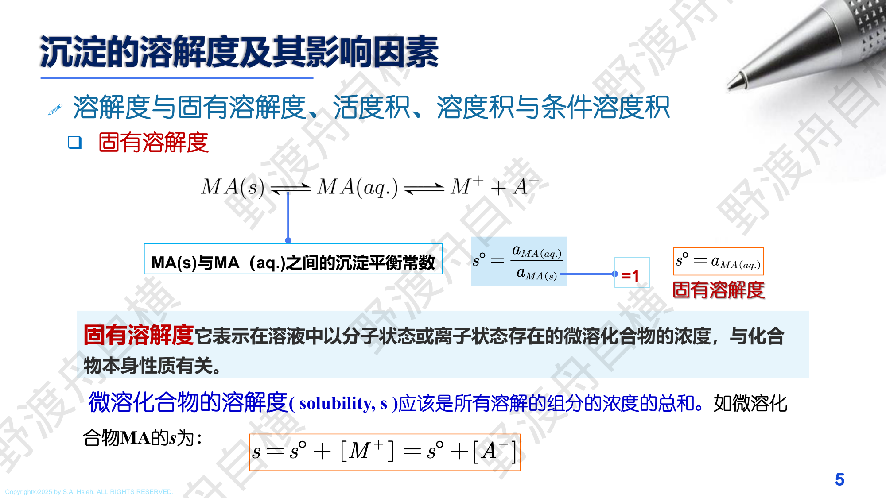
PPT: 溶度积与溶解度的关系
以 $\text{MA}$ 型沉淀为例（$\text{MA} \rightleftharpoons \text{M}^+ + \text{A}^-$）：
沉淀以分子形式溶解（不解离）的那部分浓度。某些沉淀（如 $\text{AgCl}$, $\text{PbSO}_4$）的 $s_0$ 不可忽略。
总溶解度 $s = s_{离子} + s_0$
设沉淀 $\text{M}_m\text{A}_n$ 的溶解度为 $s$，则溶解平衡为：
$$\text{M}_m\text{A}_n \rightleftharpoons m\text{M}^{n+} + n\text{A}^{m-}$$各离子浓度：$[\text{M}^{n+}] = ms$，$[\text{A}^{m-}] = ns$
$$K_{sp} = (ms)^m \cdot (ns)^n = m^m \cdot n^n \cdot s^{m+n}$$ $$\boxed{s = \left(\frac{K_{sp}}{m^m \cdot n^n}\right)^{\frac{1}{m+n}}}$$| 沉淀类型 | 举例 | $K_{sp}$ 表达式 | $s$ 的计算 |
|---|---|---|---|
| MA 型 (1:1) | $\text{AgCl, BaSO}_4$ | $K_{sp} = s^2$ | $s = \sqrt{K_{sp}}$ |
| MA$_2$ 型 (1:2) | $\text{CaF}_2, \text{PbCl}_2$ | $K_{sp} = s \cdot (2s)^2 = 4s^3$ | $s = \left(\dfrac{K_{sp}}{4}\right)^{1/3}$ |
| M$_2$A 型 (2:1) | $\text{Ag}_2\text{CrO}_4$ | $K_{sp} = (2s)^2 \cdot s = 4s^3$ | $s = \left(\dfrac{K_{sp}}{4}\right)^{1/3}$ |
| M$_3$A$_2$ 型 (3:2) | $\text{Ca}_3(\text{PO}_4)_2$ | $K_{sp} = (3s)^3(2s)^2 = 108s^5$ | $s = \left(\dfrac{K_{sp}}{108}\right)^{1/5}$ |
$\text{BaSO}_4 \rightleftharpoons \text{Ba}^{2+} + \text{SO}_4^{2-}$
$s = [\text{Ba}^{2+}] = [\text{SO}_4^{2-}] = \sqrt{K_{sp}} = \sqrt{1.1 \times 10^{-10}} = 1.05 \times 10^{-5}\;\text{mol/L}$
$\text{CaF}_2$ 属于 MA$_2$ 型：$\text{CaF}_2 \rightleftharpoons \text{Ca}^{2+} + 2\text{F}^-$
设溶解度为 $s$，则 $[\text{Ca}^{2+}] = s$，$[\text{F}^-] = 2s$
$K_{sp} = s \cdot (2s)^2 = 4s^3$
$s = \left(\dfrac{K_{sp}}{4}\right)^{1/3} = \left(\dfrac{3.9 \times 10^{-11}}{4}\right)^{1/3} = (9.75 \times 10^{-12})^{1/3} = 2.1 \times 10^{-4}\;\text{mol/L}$
$\text{F}^-$ 是弱酸 HF（$K_a = 6.6 \times 10^{-4}$）的共轭碱。当溶液 pH 降低时，$\text{F}^-$ 被质子化生成 HF：
$$\text{F}^- + \text{H}^+ \rightleftharpoons \text{HF}$$酸效应系数 $\alpha_{F^-(\text{H})}$：
$$\alpha_{F^-(\text{H})} = 1 + \frac{[\text{H}^+]}{K_a} = 1 + \frac{[\text{H}^+]}{6.6 \times 10^{-4}}$$在 pH = 3 时：$\alpha_{F^-(\text{H})} = 1 + \frac{10^{-3}}{6.6 \times 10^{-4}} = 1 + 1.52 = 2.52$
此时条件溶度积大幅增大：$K'_{sp} = K_{sp} \cdot \alpha_{F^-(\text{H})}^2 = 3.9 \times 10^{-11} \times 2.52^2 = 2.5 \times 10^{-10}$
溶解度增大为：$s = \left(\dfrac{K'_{sp}}{4}\right)^{1/3} = 4.0 \times 10^{-4}\;\text{mol/L}$（约为纯水中的 2 倍）
实际工作中，通常认为被测离子的残留浓度 $\leq 0.2\;\text{mg}$（即沉淀后母液中残留的被测组分质量 $\leq 0.2\;\text{mg}$），沉淀即为完全。这对应于分析天平的称量误差范围。
判据等价形式：若被测离子初始质量为 $m_0$，溶解损失量 $m_{loss}$，则要求：
$$\frac{m_{loss}}{m_0} \times 100\% \leq 0.1\%$$即溶解损失不超过试样的万分之一。
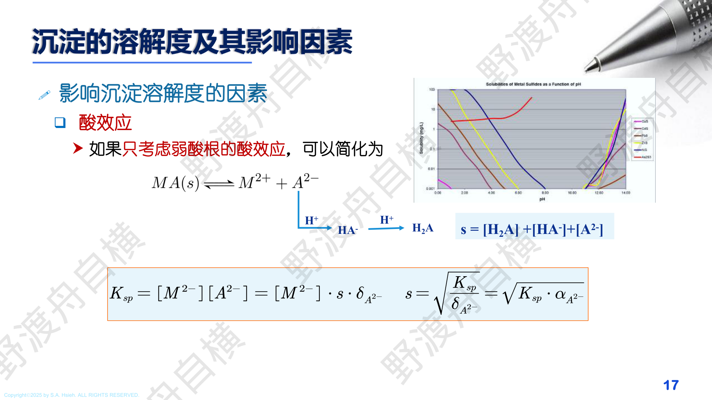
PPT: 酸效应对溶解度的影响
当沉淀的阴离子发生酸效应、阳离子发生配位效应时，条件溶度积为：
$$K'_{sp} = K_{sp} \cdot \alpha_M \cdot \alpha_A$$其中 $\alpha_M$ 为阳离子的副反应系数（配位效应），$\alpha_A$ 为阴离子的副反应系数（酸效应）。
条件溶度积总是大于热力学溶度积，副反应越强，$K'_{sp}$ 越大，溶解度越大。
已知 $K_{sp,\text{AgI}} = 10^{-16.8}$，$\text{Ag(NH}_3)_2^+$ 的 $\lg\beta_1 = 3.4$，$\lg\beta_2 = 7.4$。计算 AgI 在 $[\text{NH}_3] = 0.010\;\text{mol/L}$ 和 $[\text{S}_2\text{O}_3^{2-}] = 0.010\;\text{mol/L}$ 中的溶解度。
$\alpha_{\text{Ag}(\text{NH}_3)} = 1 + \beta_1[\text{NH}_3] + \beta_2[\text{NH}_3]^2 = 1 + 10^{3.4} \times 0.010 + 10^{7.4} \times 0.010^2 = 10^{3.40}$
$s = \sqrt{K'_{sp}} = \sqrt{K_{sp} \cdot \alpha_{\text{Ag}}} = \sqrt{10^{-16.8} \times 10^{3.40}} = 10^{-6.7} = 6.1 \times 10^{-7}\;\text{mol/L}$
$\text{MnS}$ 的 $K_{sp}$ 较大，$\text{S}^{2-}$ 易发生水解产生 $\text{HS}^-$ 和 $\text{OH}^-$。在 pH = 10.6 时：
由于 pH = 10.6 > $pK_{a1}$，$\text{HS}^-$ 为主体形式，酸效应合理近似：
$s^3 = [\text{Mn}^{2+}][\text{S}^{2-}][\text{OH}^-] = [\text{Mn}^{2+}] \cdot \dfrac{[\text{HS}^-]}{[\text{H}^+][\text{S}^{2-}]} \cdot [\text{OH}^-] = \dfrac{K_{sp,\text{MnS}} \cdot K_w}{K_{a2(\text{H}_2\text{S})}}$
$s = \sqrt[3]{\dfrac{10^{-9.6} \times 10^{-14.0}}{10^{-14.0}}} = 10^{-3.4}\;\text{mol/L}$
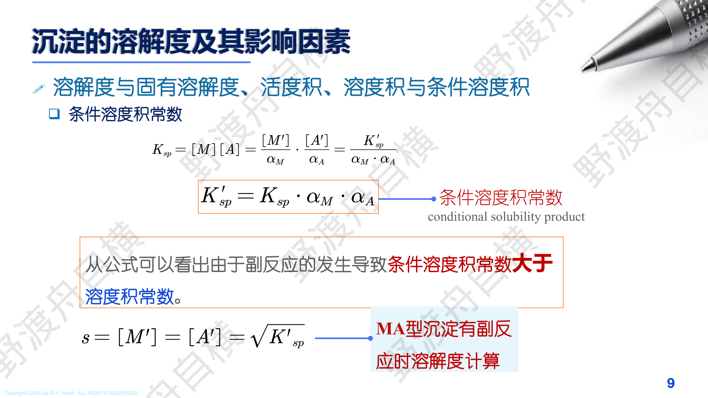
PPT: 影响沉淀溶解度的因素
溶液中加入不含构晶离子的电解质，使离子强度增大，活度系数降低，溶解度增大。
$$s = \sqrt{\frac{K_{sp}}{\gamma_+ \gamma_-}} > \sqrt{K_{sp}}$$加入含有构晶离子的试剂（沉淀剂过量），使溶解度降低。
实际操作中沉淀剂过量 50%~100% 以确保沉淀完全。
对弱酸盐沉淀（如 $\text{CaC}_2\text{O}_4$, $\text{BaCO}_3$），溶液酸度增大使阴离子被质子化，溶解度增大。
$$s = \sqrt{K'_{sp} \cdot \alpha_{A}} = \sqrt{K_{sp} \cdot \alpha_A / (\gamma_+\gamma_-)}$$对于弱酸 $\text{HA}$（$K_a$ 已知），其共轭碱 $\text{A}^-$ 的酸效应系数为：
$$\alpha_{A^-(\text{H})} = 1 + \frac{[\text{H}^+]}{K_a}$$对于二元弱酸 $\text{H}_2\text{A}$（如 $\text{H}_2\text{C}_2\text{O}_4$）：
$$\alpha_{A^{2-}(\text{H})} = 1 + \frac{[\text{H}^+]}{K_{a2}} + \frac{[\text{H}^+]^2}{K_{a1}K_{a2}}$$条件溶度积：$K'_{sp} = K_{sp} \cdot \alpha_{A^-(\text{H})}$（MA 型）或 $K'_{sp} = K_{sp} \cdot \alpha_{A^-(\text{H})}^n$（MA$_n$ 型）
溶液中存在能与构晶阳离子配位的配位剂时，溶解度增大。
例：$\text{AgCl}$ 在 $\text{NH}_3$ 溶液中溶解度增大（$\text{Ag}^+ + 2\text{NH}_3 \rightarrow \text{Ag(NH}_3)_2^+$）
多数沉淀的溶解度随温度升高而增大（溶解是吸热过程）。某些沉淀（如 $\text{CaSO}_4$）反常。
细小颗粒的溶解度大于粗大颗粒。极细颗粒（$< 1\;\mu\text{m}$）溶解度显著升高，这是 Ostwald 陈化的热力学基础。
(1) 纯水中：
$s = \sqrt{K_{sp}} = \sqrt{1.1 \times 10^{-10}} = 1.05 \times 10^{-5}\;\text{mol/L}$
500 mL 中的溶解质量：$m = s \times V \times M_{BaSO_4} = 1.05 \times 10^{-5} \times 0.500 \times 233.4 = 1.22 \times 10^{-3}\;\text{g}$
(2) 在 0.10 mol/L Na$_2$SO$_4$ 中（同离子效应）：
由于 $\text{Na}_2\text{SO}_4$ 提供的 $[\text{SO}_4^{2-}] = 0.10\;\text{mol/L} \gg s$，可近似认为 $[\text{SO}_4^{2-}] \approx 0.10\;\text{mol/L}$
$K_{sp} = [\text{Ba}^{2+}][\text{SO}_4^{2-}] = s \times 0.10$
$s = \dfrac{K_{sp}}{0.10} = \dfrac{1.1 \times 10^{-10}}{0.10} = 1.1 \times 10^{-9}\;\text{mol/L}$
500 mL 中的溶解质量：$m = 1.1 \times 10^{-9} \times 0.500 \times 233.4 = 1.28 \times 10^{-7}\;\text{g}$
向含有 $\text{PbSO}_4$ 沉淀的溶液中逐渐加入 $\text{Na}_2\text{SO}_4$：
因此溶解度曲线呈"V 形"：先降后升，最低点对应同离子效应与盐效应平衡处。
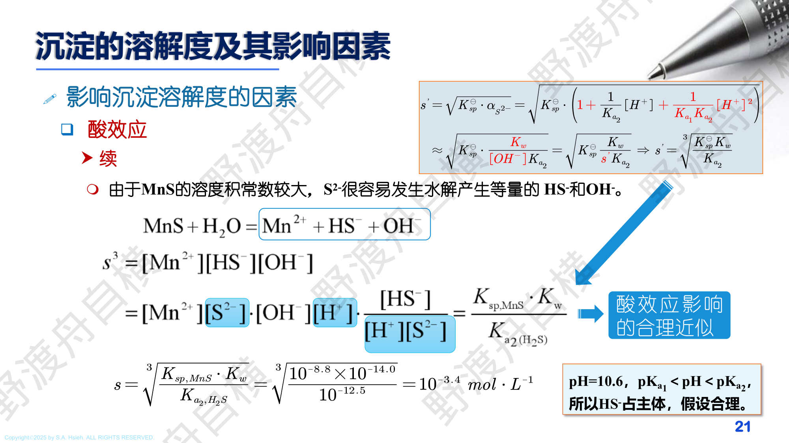
PPT: 沉淀类型与沉淀条件

PPT：晶形沉淀条件（稀溶液、慢加、热溶液、搅拌、陈化）

PPT：无定形沉淀条件（浓溶液、热、加电解质、不陈化）

PPT：均匀沉淀法（通过化学反应缓慢均匀产生沉淀剂）
| 沉淀形式要求 | 称量形式要求 |
|---|---|
| 溶解度足够小（沉淀完全） | 组成恒定，与化学式严格相符 |
| 易于过滤和洗涤 | 热稳定性好 |
| 纯净（共沉淀少） | 摩尔质量大（减小称量误差） |
| 易于转化为称量形式 | 含被测组分百分比小（提高灵敏度） |
$Q$ = 加入沉淀剂瞬间的浓度积，$S$ = 沉淀的溶解度。$(Q-S)/S$ 越大，晶核越多，颗粒越细。
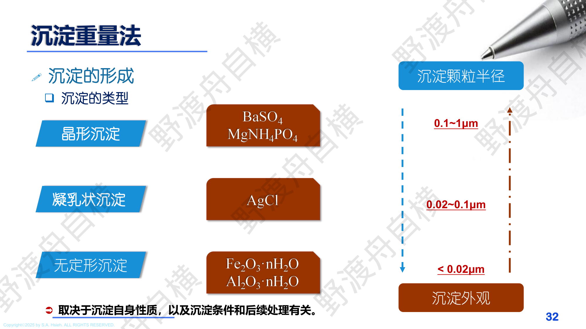
PPT: 沉淀的类型 — 晶形、凝乳状、无定形
| 特征 | 晶形沉淀 | 凝乳状沉淀 | 无定形沉淀 |
|---|---|---|---|
| 颗粒大小 | 0.1~1 $\mu$m | 0.02~0.1 $\mu$m | < 0.02 $\mu$m（胶体） |
| 结构 | 离子排列有序 | 介于两者之间 | 无序聚集 |
| 例子 | $\text{BaSO}_4$, $\text{MgNH}_4\text{PO}_4$ | $\text{AgCl}$ | $\text{Fe(OH)}_3$, $\text{Al(OH)}_3$, $\text{SiO}_2 \cdot x\text{H}_2\text{O}$ |
| 沉淀条件 | 稀溶液、慢加、热溶液、搅拌、陈化 | 条件介于两者之间 | 浓溶液、热溶液、加电解质凝聚、不需陈化 |
| 外观 | 沉淀颗粒明显可见 | 似凝乳 | 疏松、绒毛状 |
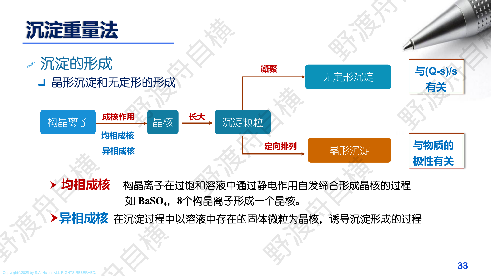
PPT: 晶形沉淀和无定形沉淀的形成
构晶离子 $\xrightarrow{\text{成核作用}}$ 晶核 $\xrightarrow{\text{长大}}$ 沉淀颗粒
沉淀颗粒形成后存在两个竞争过程：
| 成核过程 | 长大过程 | 沉淀类型 |
|---|---|---|
| 异相成核作用 | $V_{\text{聚集}} > V_{\text{定向}}$ | 无定形沉淀 |
| 均相成核作用 | $V_{\text{定向}} > V_{\text{聚集}}$ | 晶形沉淀 |
不直接加入沉淀剂，而是通过化学反应在溶液内部缓慢、均匀地产生沉淀剂，从而实现低过饱和度，获得大颗粒、纯净的晶形沉淀。
| 试剂 | 产生的沉淀剂 | 反应 | 应用 |
|---|---|---|---|
| 尿素 $\text{CO(NH}_2)_2$ | $\text{OH}^-$ | $\text{CO(NH}_2)_2 + 3\text{H}_2\text{O} \xrightarrow{\Delta} 2\text{NH}_4^+ + \text{CO}_2 + 2\text{OH}^-$ | 沉淀金属氢氧化物 |
| 草酸二甲酯 | $\text{C}_2\text{O}_4^{2-}$ | 水解缓慢释放草酸根 | 沉淀 $\text{CaC}_2\text{O}_4$ |
| 硫代乙酰胺 | $\text{S}^{2-}$ | 水解缓慢释放 $\text{H}_2\text{S}$ | 沉淀金属硫化物 |
| 三甲基磷酸酯 | $\text{PO}_4^{3-}$ | 水解缓慢释放磷酸根 | 沉淀磷酸盐 |
沉淀反应：$\text{Al}^{3+} + 3\text{HC}_9\text{H}_6\text{NO} \rightarrow \text{Al(C}_9\text{H}_6\text{NO)}_3 + 3\text{H}^+$
沉淀形式：$\text{Al(C}_9\text{H}_6\text{NO)}_3$（8-羟基喹啉铝，$M = 459.44\;\text{g/mol}$）
称量形式：$\text{Al(C}_9\text{H}_6\text{NO)}_3$（烘干即可）或 $\text{Al}_2\text{O}_3$（灼烧后）
(1) 求 $w(\text{Al})$：
换算因子：$F = \dfrac{M_{\text{Al}}}{M_{\text{Al(C}_9\text{H}_6\text{NO)}_3}} = \dfrac{26.98}{459.44} = 0.05872$
$w(\text{Al}) = \dfrac{m_P \times F}{m_s} \times 100\% = \dfrac{0.3600 \times 0.05872}{0.6000} \times 100\% = 3.52\%$
(2) 求灼烧为 $\text{Al}_2\text{O}_3$ 的质量：
由化学计量关系：$2\text{Al(C}_9\text{H}_6\text{NO)}_3 \xrightarrow{\text{灼烧}} \text{Al}_2\text{O}_3$
$m_{\text{Al}_2\text{O}_3} = 0.3600 \times \dfrac{M_{\text{Al}_2\text{O}_3}}{2 \times M_{\text{Al(C}_9\text{H}_6\text{NO)}_3}} = 0.3600 \times \dfrac{101.96}{918.88} = 0.0400\;\text{g}$
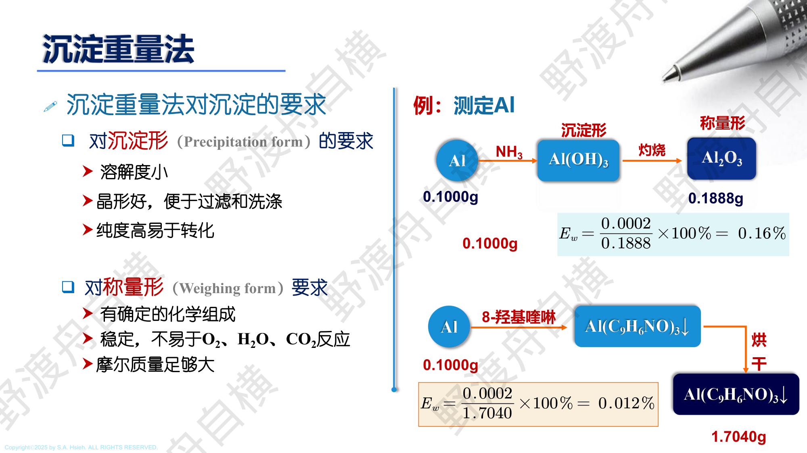

PPT：共沉淀类型详细对比（表面吸附/包藏/混晶）
PPT: 共沉淀与后沉淀
沉淀表面优先吸附与构晶离子相同的离子（第一吸附层），然后吸附与其电荷相反的抗衡离子。
吸附规则：优先吸附构晶离子 > 与构晶离子电荷相同且浓度大的离子 > 高电荷离子。
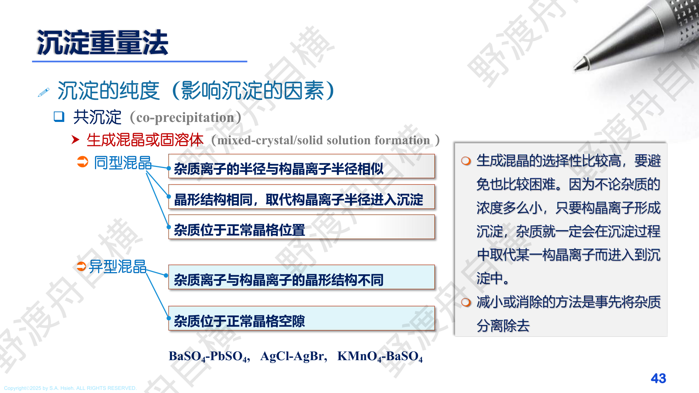
PPT: 混晶（固溶体）的两种类型
杂质离子半径和电荷与构晶离子相似，替代进入晶格。分为两类：
沉淀快速生长时，吸附在晶面上的杂质来不及脱附就被新的沉淀层覆盖。
特点：杂质被包裹在沉淀颗粒内部。
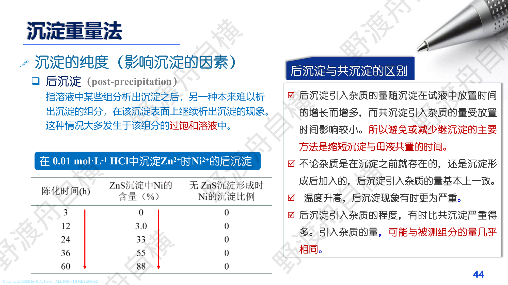
PPT: 后沉淀与共沉淀的区别
沉淀完成后，溶液中某些本来难以析出沉淀的组分，在已有沉淀表面上继续析出沉淀的现象。这种情况大多发生于该组分的过饱和溶液中。
经典实例：在 0.01 mol/L HCl 中沉淀 $\text{Zn}^{2+}$ 时 $\text{Ni}^{2+}$ 的后沉淀：
| 陈化时间 (h) | ZnS 沉淀中 Ni 的含量 (%) | 无 ZnS 沉淀时形成的 Ni 沉淀比例 |
|---|---|---|
| 3 | 0 | 0 |
| 12 | 3.0 | -- |
| 24 | 33 | -- |
| 36 | 55 | 0 |
| 60 | 88 | 0 |
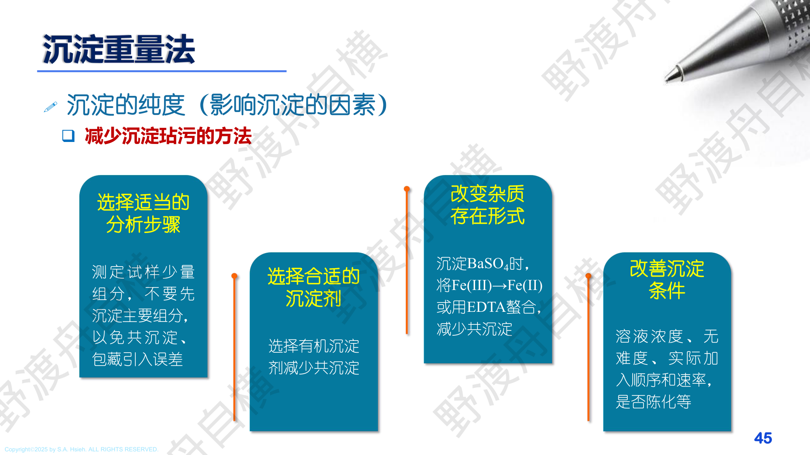
PPT: 减少沉淀玷污的四种途径
| 途径 | 具体方法 | 举例 |
|---|---|---|
| 选择适当的分析步骤 | 测定试样少量组分时，不要先沉淀主要组分，以免共沉淀包藏引入误差 | -- |
| 选择合适的沉淀剂 | 选择有机沉淀剂可减少共沉淀（有机沉淀通常表面吸附少） | 沉淀 $\text{BaSO}_4$ 时若有 $\text{Fe(II)}$，可用 EDTA 螯合 $\text{Fe}$ |
| 改变杂质存在形式 | 将杂质转化为不易被吸附的形式 | 将 $\text{Fe(II)}$ 氧化为 $\text{Fe(III)}$ 再用 EDTA 掩蔽 |
| 改善沉淀条件 | 控制溶液浓度、实施加入顺序和速率、洗涤、陈化 | 用均匀沉淀法降低过饱和度 |
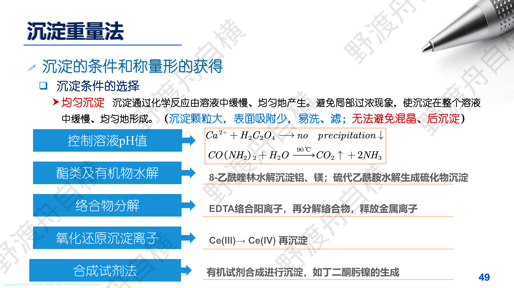
PPT: 沉淀条件的选择与均匀沉淀法的多种实现方式
| 方法 | 原理 | 典型应用 |
|---|---|---|
| 控制溶液 pH | 缓慢调节 pH 使沉淀逐步析出 | $\text{Ca}^{2+} + \text{H}_2\text{C}_2\text{O}_4 \to$ 无沉淀（酸性）；$\text{CO(NH}_2)_2$ 水解产生 $\text{NH}_3$ 提高 pH 后沉淀 |
| 酯类和有机物水解 | 有机化合物缓慢水解释放沉淀剂 | 8-乙酰喹啉水解沉淀镍；硫代乙酰胺水解产生 $\text{H}_2\text{S}$ |
| 络合物分解 | 先用 EDTA 络合金属离子，再分解络合物释放金属离子 | EDTA 络合阳离子后，加热再分解络合物 |
| 氧化还原沉淀 | 通过氧化还原改变离子价态实现沉淀 | $\text{Ce(III)} \to \text{Ce(IV)}$ 再沉淀 |
| 合成试剂法 | 有机试剂合成进行沉淀 | 如丁二酮肟镍的生成 |
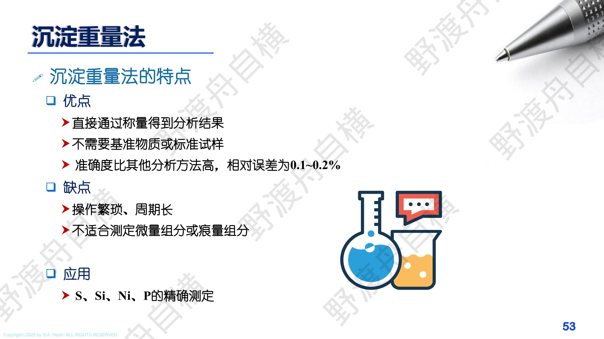
PPT: 沉淀重量法的优缺点和应用
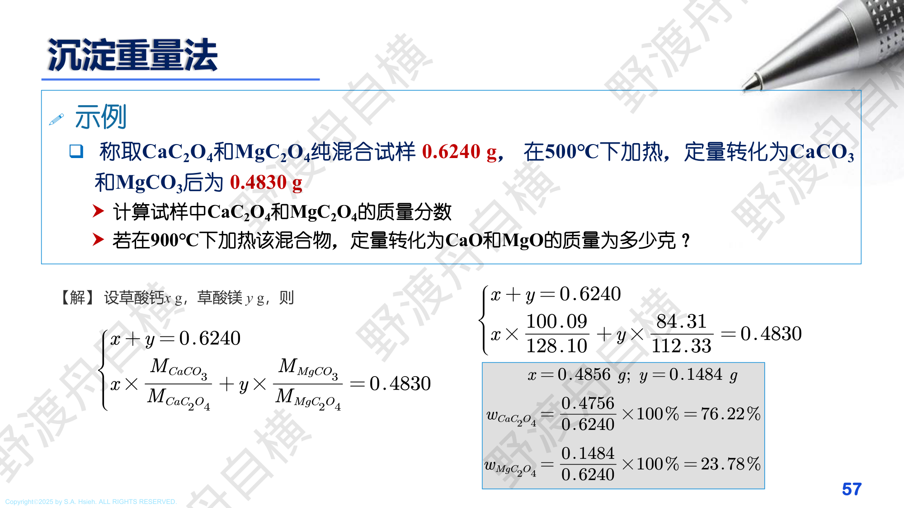
PPT: 混合试样的联立方程计算
设 $\text{CaC}_2\text{O}_4$ 质量为 $x$，$\text{MgC}_2\text{O}_4$ 质量为 $y$：
$x + y = 0.6240$ ...(1)
转化关系：$\text{CaC}_2\text{O}_4 \to \text{CaCO}_3$，$\text{MgC}_2\text{O}_4 \to \text{MgCO}_3$
$x \times \dfrac{100.09}{128.10} + y \times \dfrac{84.31}{112.33} = 0.4830$ ...(2)
解方程组得：$x = 0.4856\;\text{g}$，$y = 0.1484\;\text{g}$
$w(\text{CaC}_2\text{O}_4) = \dfrac{0.4856}{0.6240} \times 100\% = 76.22\%$
$w(\text{MgC}_2\text{O}_4) = \dfrac{0.1484}{0.6240} \times 100\% = 23.78\%$